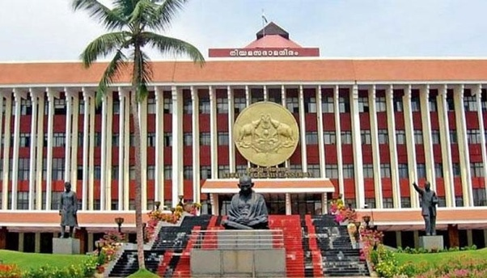

Thiruvananthapuram is the capital of Kerala.
It is the most populous city in Kerala with a population of 957,730 as of 2011.
The encompassing urban agglomeration population is around 1.68 million.
Located on the west coast of India near the extreme south of the mainland,
Thiruvananthapuram is a major information technology hub in Kerala.

Padmanabhaswami Temple
TThe Padmanabhaswamy temple is a Hindu temple located in Thiruvananthapuram. The temple is built in an intricate fusion of the Chera style and the Dravidian style of architecture, featuring high walls, and a 16th-century gopura

Kovalam
Kovalam is a region situated within the city of Trivandrum. Located around 13 km southwest of the city center, Kovalam is famous for its world famous beaches.

Niyamasabha Mandiram
The Niyamasabha Mandiram, located in Palayam, Thiruvananthapuram, is the seat of the Kerala State Legislative Assembly or the Niyamasabha.